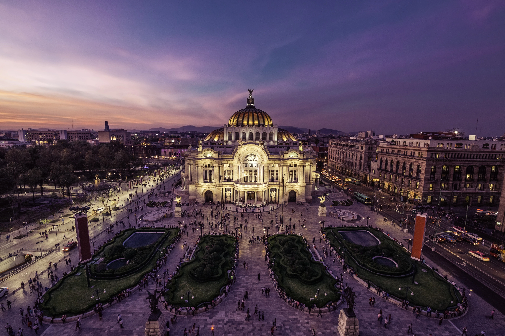

AmericaGo
México
México, una joya en el corazón de América Latina, despliega un turismo que abraza con pasión la diversidad de su cultura, historia y naturaleza. Desde las antiguas pirámides mayas y aztecas hasta los encantadores pueblos coloniales de calles empedradas, cada rincón del país es un lienzo vibrante donde las tradiciones ancestrales se entrelazan con la modernidad. La autenticidad de México se manifiesta en sus coloridos mercados, en la calidez de su gente y en las celebraciones llenas de vida que danzan al son de la música tradicional.
Piramides Maya
Hay diversas piramides Maya, como el Chichén Itzá, el cual es un tesoro arqueológico Maya en la península de Yucatán en México, emerge como un espectacular testimonio del ingenio y la grandeza de la civilización maya. Sus majestuosas estructuras de piedra se alzan en medio de la selva, evocando una época ancestral de esplendor. En su corazón se encuentra la imponente Pirámide de Kukulcán, también conocida como El Castillo, una maravilla arquitectónica que se alza hacia el cielo con escalones precisamente diseñados para crear efectos visuales en los equinoccios. Al recorrer sus calzadas y plazas, uno puede imaginar la vida y rituales de hace siglos, desde el Juego de Pelota, un complejo deportivo y ceremonial, hasta el Templo de los Guerreros con sus columnas labradas.
Palacio de bellos artes

El Palacio de Bellas Artes, situado en el corazón del vibrante escenario de la Ciudad de México, es un icónico edificio que destila historia, arte y cultura. En su interior, el Palacio de Bellas Artes despliega una riqueza artística deslumbrante. Sus murales, creados por renombrados artistas como Diego Rivera y Rufino Tamayo, adornan sus paredes, contando historias profundamente arraigadas en la identidad y el alma mexicanos. Estas obras maestras visuales dan vida a las paredes, convirtiendo los espacios en lienzos que narran la historia y la evolución del país. En el Teatro de Bellas Artes, el escenario cobra vida con la ópera, el ballet y otros espectáculos que despiertan las emociones del público. La atmósfera magnífica y la acústica excepcional crean una experiencia que transporta a los asistentes a mundos de ensueño y pasión artística.